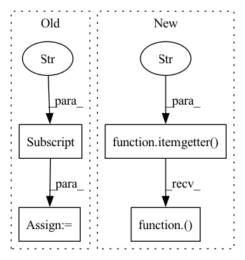

Pattern ID :11082

Before Change
obs_batch = data_batch["obs"]
action_batch = data_batch["action"]
next_obs_batch = data_batch["next_obs"]
reward_batch = data_batch["reward"]
done_batch = data_batch["done"]
curr_state_q1_value = self.q1_network(torch.cat([obs_batch, action_batch], dim=1))
curr_state_q2_value = self.q2_network(torch.cat([obs_batch, action_batch], dim=1))
After Change
def update(self, data_batch, update_policy_network):
obs_batch,action_batch,next_obs_batch,reward_batch,done_batch = itemgetter("obs", "action", "next_obs", "reward", "done")(data_batch)
curr_state_q1_value = self.q1_network(torch.cat([obs_batch, action_batch], dim=1))
curr_state_q2_value = self.q2_network(torch.cat([obs_batch, action_batch], dim=1))
In pattern: SUPERPATTERN
Frequency: 4
Non-data size: 4
Instances
Fragment ID: 38152020
Project Name: x35f/unstable_baselines
Commit Name: fd650918d0f96ab53625afed362025e5a53c10a6
Time: 2022-06-13
Author: 1621322691@qq.com
File Name: unstable_baselines/baselines/td3/agent.py
M Class Name: TD3Agent
N Class Name: TD3Agent
M Method Name: update(3)
N Method Name: update(3)
M Parent Class: BaseAgent,torch.nn.Module
N Parent Class: BaseAgent,torch.nn.Module
M File Name: unstable_baselines/baselines/td3/agent.py
N File Name: unstable_baselines/baselines/td3/agent.py
M Start Line: 72
M End Line: 136
N Start Line: 73
N End Line: 129
'>
Before Change
def update(self, data_batch):
obs_batch = data_batch["obs"]
action_batch = data_batch["action"]
next_obs_batch = data_batch["next_obs"]
reward_batch = data_batch["reward"]
done_batch = data_batch["done"]
After Change
def update(self, data_batch):
obs_batch, action_batch, reward_batch, next_obs_batch, done_batch, truncated_batch = \
itemgetter("obs", "action", "reward", "next_obs", "done", "truncated")(data_batch)
reward_batch = data_batch["reward"]
done_batch = data_batch["done"]
'>
Fragment ID: 38152019
Project Name: x35f/unstable_baselines
Commit Name: 4f0036392d4f35e65516efa47407b0cfbe05eb81
Time: 2023-01-16
Author: 1621322691@qq.com
File Name: unstable_baselines/baselines/sac/agent.py
M Class Name: SACAgent
N Class Name: SACAgent
M Method Name: update(2)
N Method Name: update(2)
M Parent Class: BaseAgent
N Parent Class: BaseAgent
M File Name: unstable_baselines/baselines/sac/agent.py
N File Name: unstable_baselines/baselines/sac/agent.py
M Start Line: 60
M End Line: 62
N Start Line: 61
N End Line: 62
'>
Before Change
if type(obs) != torch.tensor:
obs = torch.FloatTensor(np.array([obs])).to(util.device)
action_info = self.policy_network.sample(obs)
action = action_info["action_scaled"]
log_prob = action_info.get("log_prob", 1)
return {
"action": action.cpu().numpy()[0],
After Change
obs = [obs]
if type(obs) != torch.tensor:
obs = torch.FloatTensor(np.array(obs)).to(util.device)
action = itemgetter("action_scaled")(self.policy_network.sample(obs))
log_prob = np.zeros([(action.shape[0]),])
if ret_single:
action = action[0]
log_prob = log_prob[0]
'>
Fragment ID: 38152027
Project Name: x35f/unstable_baselines
Commit Name: fd650918d0f96ab53625afed362025e5a53c10a6
Time: 2022-06-13
Author: 1621322691@qq.com
File Name: unstable_baselines/baselines/td3/agent.py
M Class Name: TD3Agent
N Class Name: TD3Agent
M Method Name: select_action(3)
N Method Name: select_action(3)
M Parent Class: BaseAgent,torch.nn.Module
N Parent Class: BaseAgent,torch.nn.Module
M File Name: unstable_baselines/baselines/td3/agent.py
N File Name: unstable_baselines/baselines/td3/agent.py
M Start Line: 150
M End Line: 158
N Start Line: 142
N End Line: 155
'>
Before Change
if type(obs) != torch.tensor:
obs = torch.FloatTensor(np.array([obs])).to(util.device)
action_info = self.policy_network.sample(obs)
action = action_info["action_scaled"]
log_prob = action_info.get("log_prob", 1)
return {
"action": action.detach().cpu().numpy()[0],
"log_prob": log_prob
After Change
obs = [obs]
if type(obs) != torch.tensor:
obs = torch.FloatTensor(np.array(obs)).to(util.device)
action = itemgetter("action_scaled")(self.policy_network.sample(obs))
log_prob = np.zeros([(action.shape[0]),])
if ret_single:
action = action[0]
log_prob = log_prob[0]
'>
Fragment ID: 38152024
Project Name: x35f/unstable_baselines
Commit Name: fd650918d0f96ab53625afed362025e5a53c10a6
Time: 2022-06-13
Author: 1621322691@qq.com
File Name: unstable_baselines/baselines/ddpg/agent.py
M Class Name: DDPGAgent
N Class Name: DDPGAgent
M Method Name: select_action(3)
N Method Name: select_action(3)
M Parent Class: BaseAgent,torch.nn.Module
N Parent Class: BaseAgent,torch.nn.Module
M File Name: unstable_baselines/baselines/ddpg/agent.py
N File Name: unstable_baselines/baselines/ddpg/agent.py
M Start Line: 104
M End Line: 109
N Start Line: 99
N End Line: 110